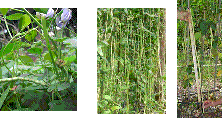

HORT 281 :: Lecture 21 :: ORIGIN, AREA, PRODUCTION, VARIETIES, PACKAGE OF PRACTICES FOR COW PEA

Origin, area, production, varieties, package of practices for COW PEA
(Syn: Southern pea, Black eyed pea, Yard long bean)
(Vigna uniguiculata) (2n = 22, 24)
(Hindi: Lobia, Chouli)
Cowpea is a typical warm season crop adapted to tropics. The crop is used in a variety of ways. Tender pods are used as vegetable and dry beans as pulse. Due to its nutritive value and soil improving properties, it is also used as a fodder, green manure and cover crop. Being a legume crop, cowpea fits well in inter-cropping system. In Kerala, it is grown as a floor crop in coconut gardens, as an inter-crop in tapioca, fringe crop in rice fields and in garden lands. The crop is an integral part of sustainable agriculture. 100 g of green tender pods contain 4.3 g protein, 2.0 g fibre, 8.0 g carbohydrates, 74 mg phosphorus, 2.5 mg iron, 13.0 mg vitamin-C, 0.9 mg minerals, etc. (Africa is considered as primary centre of origin of cowpea). Confusion prevailed in the taxonomy of cultivated cowpea and related wild species was solved to a great extent by Summerfield et. al . (1974) and Ng and Marechal (1985).
Taxonomy and botany
Three cultivated sub-species have been identified under the species Vigna unguiculata to which cowpea belongs:
- V. unguiculata ssp. Unguiculata (dual purpose type)
- V. unguiculata ssp. Cylindrical (Syn:
- V. Unguiculata ssp. Catjang, V. Sinensis ssp. Catjang( (grain type)
- 
- V. Unguiculata var. Sesquipedalis (vegetable type).
Vigna unguiculata ssp. cylindrical Vigna unguiculata var. sesquipedalis
Some do not agree on the distinct subspecies status to each of the above three. Ng and Marechal (1985) renamed subspecies unguiculata, cylidrica and sesquipedalis as cultigroups. Unguiculata, Biflora and Sesquipedalis respectively under V.unguiculata.
Cultigroup unguiculata is most diverse of cultivated V. unguiculata and is widely distributed. It is commonly known as cowpea. This is prostrate, semi-erect, erect or climbing. Pods are linear, in axillary racemes. Seeds are small and kidney shaped.
Sesquipedalis, known as yard long bean or asparagus bean is used as vegetable. It is climbing or trailing. Pods are 30-90 cm long, pendulous, fleshy and tending to shrink when dry. Seeds are elongated and kidney shaped.
All the three cross each other. In a cross between V. unguiculata spp. Unguiculata (2n=22) and V. Unguiculata var. Sesquipedalis (2n=24), F1, had 2n=23.
Botany
Cowpea is a diploid with 2n=2x=22. It is a vigorously growing annual herb with strong tap root system. Growth habit ranges from erect to climbing with profuse branching. Stem is cylindrical and twisting. Inflorescence is an un-branched axillary raceme bearing several flowers at terminal end of peduncles. Length of peduncle varies from 5-60 cm.
Anthesis takes place early in morning between 6.30 and 9.00 a.m. The process of opening corolla takes 45-60 minutes. Dehiscence of anthers is much earlier and it varies from 10.0 p.m. to 00.45 a.m. For hybridization purpose, emasculation is to be done 20 hours before flower opening. Safest time for emasculation is morning hours preceding day of anthesis. Stigma becomes receptive from 12 hours before blooming to 6 hours after anthesis.
Climate
Cowpea is a warm season crop and comes up well between 21-35oC. Grain types and dual purpose types are tolerant to hardy conditions including high temperature, drought and poor soil. The climbing yard long bean prefers mild climate than grain types. Performance of varieties varies with day length, rainfall and temperature. Hence, specific varieties are to be selected for each season.
Even though, cowpea can be grown in any soil, fertile loose soil rich in humus is required for a prolonged harvest.
Varieties
Varieties and cultivars respond differently to photoperiod. Brief descriptions of improved varieties are given below:
Developing institution |
Variety |
Special features |
IIHR, Bangalore. |
IIHR 16 |
Developed through pedigree selection from Arka Garima x Pusa Komal. Plants erect bushy, 70-75 cm tall, photo insensitive. Pods green and medium long (15-18 cm). Yield 19 t/ha in 70-75 days. |
|
Arka Garima* (Sel 61-B) |
Derived through back cross and pure line selection from TUV 762 x V. unguiculate var. sesquipedalis. Plants vigorous, bushy, with purple flowers. Pods round and thick, fleshy and stringless.Tolerant to heat and drought. Yield 18 t/ha in 90 days. |
|
Arka Suman |
Bushy photo insensitive variety with medium long pods. Yield 15 t/ha. |
|
Arka Samrudhi |
Bushy photo insensitive variety with medium long pods. Yield 15 t/ha. |
IARI, New Delhi. |
Pusa Komal * (Sel 1552) |
Plants bushy, flowers in 45 days. Pods light green, 25-30 cm long. Resistant to bacterial blight. Yield 10 t/ha. |
|
Pusa Phalguni |
Dwarf variety that matures in 60 days. Suitable for February-March sowing. Yield 5-10 t/ha. |
|
Pusa Barsati |
Suitable for rainy season. Yield 9-9.5 t/ha. |
|
Pusa Dofasli |
Photo insensitive. Yield 7.5-8 t/ha. |
|
Pusa Rituraj |
Bushy variety with 22-25 cm long and thin pods. Yield 8-10 t/ha. |
Kerala Agricultural University |
Vyjayanthi |
Trailing growth habit, long wine red coloured pods, brown seeds; Av. Length of pod 50.62 cm: Av. Fruit weight 16.17 g; No. of seeds / pod 20-22; Productivity 12.6 t/ha. |
|
Lola |
Trailing growth habit, smooth and extra long pods; glossy light green coloured long pods with purple tip, black seeds; Av. Length of pod 53.38 cm; Av. Pod weight 22 g; No. of seeds / pod 20-22; Productivity 20.0 t/ha. |
|
KMV 1 |
Trailing growth habit, long light green pods with brown tip, Immature seeds light green, Av. Length of pod 38 cm; No. of seeds / pod 19; Productivity 14.2 t/ha. |
|
Bhagyalakshmi |
Early flowering, bushy growth habit, light green medium sized pods, mottled seeds; Av. Length of pod 27.0 cm; Av. Pod weight 7.13 g; Days to first harvest 48 days; Productivity 6.48 t/ha. |
|
Kanakamani |
Semi trailing growth habit, pod-dark green, bold seeded and medium long, reddish brown seeds; Av. Pod length 17.8 cm; Av. Pod weight 2.0 g; Seeds / pod 17; Productivity 7.0 t/ha. |
|
Kairali |
Resistant to mosaic disease, semi trailing growth habit, pink coloured medium long pods, reddish brown seeds; Av. Length of pod 22.78 cm; Av. Pod weight 7.08 g; Days to first harvest 50, Productivity 7.13 t/ha. |
|
Anaswara |
Semi trailing, pods-light green, bold seeded and medium long, purple flowers; Av. Pod length 28.13 cm; Av. Pod weight 12.5 g. Seeds / pod 19; Productivity 12.5 t/ha. |
|
Varun |
Tolerant to mosaic, semi trailing growth habit, pink coloured medium long pods, reddish. Tolerant to mosaic, semi trailing growth habit, pink coloured medium long pods, reddish brown seeds; Av. Length of pod 27 cm; Av. Pod weight 11 g; Days to first harvest 50; Productivity 8.4 t/ha. |
Tamil Nadu Agrl. University |
CO.2 |
A semi spreading variety with 26 cm long pods having less fibre. Yield 9.4 t/ha. |
|
Vamban |
Variety with long green pods. Yield 10.6 t/ha. |
NDAU&T, Faizabad, UP. |
Sel-2-1* |
Plants 70-75 cm tall. Pods green, 25-30 cm long, black seeded. Susceptible to cercospora leaf spot and viruses. |
Punjab Agrl. University, Ludhiana |
Sel-263* |
Early maturing dwarf variety with green thick and fleshy pods of 20 cm length. Resistant to mosaic and golden mosaic virus. |
BCKVV, Kalyani |
Bidhan Barati-1 |
Bushy variety resistant to cowpea mosaic and golden mosaic virus. Flowers white. Pods green, medium long (25.2 cm) borne on long stout peduncle. Yield 13.4 t/ha. |
|
Bidhan Barati-2 |
Semi determinate variety with purple flowers. Pods light green, thick medium long (25.8 cm) borne on short peduncle. Yield 15.9 t/ha. |
Season
In areas where winter is mild, cowpea can be grown throughout the year. In North Indian plains, it is sown during February-March as a summer crop. In Kerala cowpea is grown throughout the year and June-July, September-October and December-January are main seasons.
Land preparation and sowing
Land is prepared to a fine tilth by 2-3 ploughing and harrowing. Field is divided into plots of convenient size and seeds of bushy varieties are dibbled at a spacing of 30 x 15 cm with 1-2 seeds per hole. For semi-trailing varieties provide a spacing of 45 x 30 cm. During rainy season, seeds are sown at the above spacing in raised beds of 90 cm width. Trailing varieties are sown at the above spacing in raised beds of 90 cm width. Trailing varieties are sown in pits of 45-60 cm diameter and 30-45 cm depth at a spacing of 2m x 2m with 3 plants / pit for trailing on bower. Trailing varieties are also grown on trellis by sowing seeds in channels at 1.50 x 0.45 spacing.
Seed rate required for various types are :
|
Seed rate |
Spacing |
Bushy vegetable tyeps |
20-25 kg/ha |
30 x 15 cm |
Semi-trailing vegetable types |
20-25 kg/ha |
45 x 30 cm |
Trailing vegetable tyeps |
4-5 kg/ha |
2.0 x 2.0 m |
Dual purpsoe (broadcasting) |
60-65 kg/ha |
- |
Dual purpose (dibbling) |
40-60 kg/ha |
45 x 30 cm |
In land, where cowpea is cultivated for the first time, inoculate seeds with Rhizobium for quick nodulation on roots and for fixing atmospheric nitrogen.
Manures and fertilizers
Kerala Agricultural University recommended a fertilizer dose of 20:30:10 kg NPK / ha along with 20 t. of farmyard manure for cowpea. Yard long bean responds well to application of fertilizers. Hence, a higher dose of 25:75:60 kg NPK/ha is also recommended in some other states. Half of N along with entire dose of P and K should be applied at the time of final land preparation. Apply remaining 15-20 days after sowing along with weeding and earthing up.
For yard long bean, apply fertilizers in several split doses at fortnightly interval for protected fruiting. Drenching cow dung slurry in basins of plants and spraying cow dung supernatant liquid is also highly beneficial for trailing types.
Apply 250 kg lime or 400 kg dolomite / ha in acidic soils at the time of land preparation.
Irrigation
Cowpea, in general, is sensitive to water logging and requires less moisture compared to other vegetables. Grain types require only 2-3 protective irrigations at flowering and pod development stages. Water requirement of vegetable types with protracted and long fruiting phase is more than that of grain types. Irrigate trailing vegetable types at 4-15 days interval depending on soil during pre-flowering phase. Hardening of plants by restricting irrigation during pre-flowering stage is advantageous for avoiding excess vegetative growth and will induce early flowering. Once plant starts flowering, provide frequent but light irrigation. Excess irrigation and frequent rains during fruiting period induces vegetative phase at the expense of fruiting.
Interculture
Climbing types are usually trailed to bowers or trellis made of bamboo poles and coir or plastic wire for harvesting maximum yield. Erect supports with wooden sticks for training plants to the bower when plants start vining. To reduce cost of production, stretching of jute wires from base to bower is also a viable practice.
Shallow cultivation and earthing up is necessary during early stages of crop to check weed growth. Fluchloralin (2 litres /ha) will effectively check weed growth for 20-25 days. Once crop is covered, weeds will naturally be under control.
Light earthing up along with fertilizer application is also highly advantageous for better growth of plants. This facilitates better root growth and prevents lodging of young seedlings.
Nipping of excess vegetative growth is a common practice for inducing flowering and fruiting in bush and semi-trailing cowpea varieties especially when there is rain during flowering and fruiting phase.
Plant growth regulators
Plant growth regulators are effective for specific purposes in yard long bean. Spraying of NAA (15 ppm), 15 and 30 days after sowing is beneficial for inducing fruit set. CCC is reported to induce tolerance to mosaic disease.
Harvesting and yield
Tender fruits are harvested after attaining full size but before they become fibrous. Yard long been is usually harvested in alternate days and harvesting period extends up to 45 days under good management practices. In bush varieties 2-5 harvests are possible.
Yield
Bush varieties - 4-5 t/ha
Semi-trailing varieties - 7-8 t/ha.
Yard long bean varieties - 15-18 t/ha
Seed yield
Bush varieties - 750-1250 kg/ha
Semi-trailing varieties - 1000-1500 kg/ha.
Yard long bean varieties - 450-600 kg/ha
Pests and diseases
Vegetable cowpea varieties especially those belonging to succulent yard long bean are susceptible to a number of pests and diseases. Pea aphids, serpentine leaf miner, stem fly, thrips, pod borers, leaf roller, hairy caterpillar etc. are major pests and fusarium wilt, rhizoctonia wilt, anthracnose, powdery mildew and mosaic are serious diseases affecting cowpea.
********
1. Botanical name for cowpea is ____________.
2. Origin of cowpea is ____________.
a. Central Africa b. India c. Europe d. Japan
3. The green pod yield of cowpea is _________ q/ha.
4. Anthracnose of cowpea is transmitted by _______________.
5. The vector for cowpea mosaic virus is ____________.
a. Thrips b. Water c. Aphids d. Jassids
| Download this lecture as PDF here |